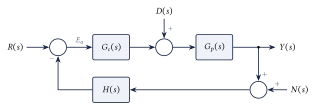
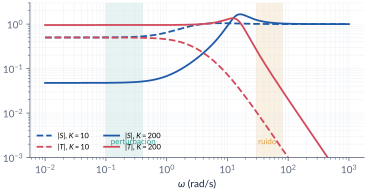
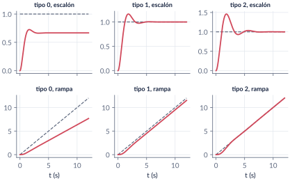
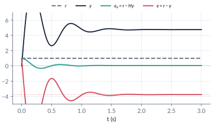
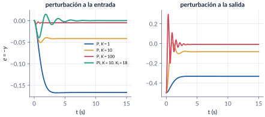
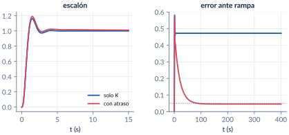

6. Error en estado estacionario
Semana 7 · una clase
De las tres cosas que se evalúan en un sistema de control —estabilidad, transitorio y error—, falta la tercera: cuánto se equivoca el lazo cuando todo se asienta. Empezamos con las funciones de sensitividad, que muestran cómo la referencia, las perturbaciones y el ruido llegan al error. Luego, con las señales de prueba (escalón, rampa, parábola), el tipo del sistema y las constantes de error \(\kappa_p\), \(\kappa_v\), \(\kappa_a\), calculamos el error sin simular. Vemos qué cambia con un sensor que no es unitario, cómo se rechaza una perturbación, cómo se calcula el error en espacio de estado y qué hacer cuando la especificación de error choca con la de transitorio.
Al terminar esta parte usted podrá
- Relacionar el error de seguimiento con la referencia, las perturbaciones y el ruido a través de las funciones de sensitividad.
- Calcular el error en estado estacionario ante escalón, rampa y parábola con el tipo y las constantes \(\kappa_p\), \(\kappa_v\), \(\kappa_a\), después de verificar la estabilidad.
- Tratar la retroalimentación no unitaria con el lazo abierto \(G_{OL}\) y distinguir el error de seguimiento del de actuación.
- Calcular el error por perturbaciones y en espacio de estado, y reconocer cuándo el error choca con el transitorio.
Ruta de la clase
| Clase | Qué se ve | Handout | Scripts |
|---|---|---|---|
| 1 | Sensitividad; señales de prueba; tipo y constantes de error; retroalimentación no unitaria; perturbaciones; error en espacio de estado; error contra transitorio | §6.1–6.7 | C6_Ej1–C6_Ej6, crearModelo_Perturbacion |
Lo esencial, en una página

Sensitividad
Con retroalimentación unitaria,
\[ E=R-Y=S\,R-S\,G_p\,D+T\,N,\qquad S=\frac{1}{1+G_cG_p},\quad T=\frac{G_cG_p}{1+G_cG_p},\quad S+T=1 . \]
No se pueden hacer pequeñas las dos a la misma frecuencia: lazo abierto grande donde viven la referencia y las perturbaciones, pequeño donde vive el ruido.

Primero la estabilidad
El teorema del valor final solo vale si el lazo cerrado es estable. Un “error en estado estacionario” de un lazo inestable no significa nada.
Tipo y constantes de error
\[ e_{ss}=\lim_{s\to0}s\,\frac{R(s)}{1+G(s)},\qquad \kappa_p=\lim_{s\to0}G,\quad \kappa_v=\lim_{s\to0}sG,\quad \kappa_a=\lim_{s\to0}s^2G . \]
El tipo es el número de integradores del lazo abierto \(G\).
| escalón | rampa | parábola | |
|---|---|---|---|
| Tipo 0 | \(1/(1+\kappa_p)\) | \(\infty\) | \(\infty\) |
| Tipo 1 | \(0\) | \(1/\kappa_v\) | \(\infty\) |
| Tipo 2 | \(0\) | \(0\) | \(1/\kappa_a\) |

Malla abierta no es lazo abierto
Con un sensor \(H\neq1\), la malla abierta \(GH\) da el error de actuación \(r-Hy\); el error de seguimiento \(r-y\) sale del lazo abierto \(G_{OL}=\dfrac{G}{1+GH-G}\). Con \(G=100/(s+1)\) y \(H=1/(s+5)\): error de actuación \(1/21\), pero la salida termina en \(4.76\) (error de seguimiento \(-3.76\)), porque \(H(0)=1/5\).

Perturbaciones
Con \(R=0\) y la perturbación a la entrada del proceso, \(E=-\dfrac{G_p}{1+G_cG_p}D\). Un escalón de perturbación se rechaza por completo si hay un integrador antes del punto donde entra (en el controlador).

En espacio de estado
Con el lazo cerrado y una referencia constante, el estado estacionario sale de \(\dot x=0\): \(x_{ss}=-(\mathbb A-\mathbb B\mathbb C)^{-1}\mathbb B\,r\). Un estado integrador \(\dot x_3=r-y\) vuelve el lazo de tipo 1.

Códigos de esta parte
Los bloques salen directamente de los archivos del repositorio. Ejecute antes iniciarCurso.
Estabilidad, tipo y constantes de cuatro lazos (§6.3).
G = {20*(s+2)/((s+1)*(s+5)), 50/(s*(s+3)*(s+10)), ...
100*(s+4)*(s+6)/(s^2*(s+5)*(s+8)), 5*(s+1)/(s^3*(s+2))};
for i = 1:4
T = feedback(G{i}, 1);
estable = all(real(pole(T)) < 0);
[tipo, kp, kv, ka] = constantesError(G{i});
fprintf('(%d) estable = %d tipo %d kp = %g kv = %g ka = %g\n', i, estable, tipo, kp, kv, ka);
if estable % error ante r = 5, 2t y 1.5 t^2
fprintf(' ess: %g %g %g\n', 5/(1 + kp), 2/kv, 3/ka);
end
endError de rampa simulado.
t = 0:0.01:20;
T = feedback(G{2}, 1); % tipo 1 ante rampa r = 2t
y = lsim(T, 2*t, t);
plot(t, 2*t, '--', t, y); grid on; legend('r = 2t', 'y');
eFinal = 2*t(end) - y(end) % 2/kv = 1.2La función del curso constantesError.
function [tipo, kp, kv, ka] = constantesError(G)
% CONSTANTESERROR Tipo y constantes estáticas de error de un lazo abierto G(s).
% [tipo, kp, kv, ka] = constantesError(G)
% tipo = número de polos en el origen de G (el lazo abierto, con
% retroalimentación unitaria). kp = lim G, kv = lim sG, ka = lim s^2 G.
% OJO: solo tiene sentido si el lazo cerrado es estable (verifíquelo antes).
[z, p, k] = zpkdata(minreal(tf(G)), 'v');
enCero = abs(p) < 1e-9; tipo = sum(enCero);
p0 = p(~enCero); z0 = z(abs(z) > 1e-9); nz0 = sum(abs(z) <= 1e-9);
base = real(k*prod(-z0)/prod(-p0)); % ganancia "de Bode" sin los s^N
c = Inf(1, 3);
for i = 0:2
e = tipo - nz0 - i; % potencia de s que queda en el denominador
if e > 0, c(i+1) = Inf; elseif e == 0, c(i+1) = base; else, c(i+1) = 0; end
end
kp = c(1); kv = c(2); ka = c(3);
endMalla abierta, lazo abierto y los dos errores (§6.4).
G = 100/(s+1); H = 1/(s+5);
T = feedback(G, H); pole(T) % estable: -3 +- 9.8j
ea = 1/(1 + dcgain(G*H)) % error de actuación: 0.0476
Gol = minreal(G/(1 + G*H - G)) % lazo abierto: polo en +98
e = 1/(1 + dcgain(Gol)) % error de seguimiento: -3.762
1 - dcgain(T) % lo mismo, directamenteSimulación y sensor recalibrado.
t = 0:0.001:3;
y = step(T, t); yH = step(T*H, t);
plot(t, ones(size(t)), '--', t, y, t, 1 - yH, t, 1 - y); grid on;
legend('r', 'y', 'e_a = r - Hy', 'e = r - y');
k = fzero(@(k) dcgain(feedback(G, k/(s+5))) - 1, 5) % sensor recalibrado: 4.95Proporcional (§6.5).
for K = [1 10 100]
Ted = -feedback(Gp, K); % E/D con D a la entrada (R = 0)
Tes = -feedback(1, K*Gp); % E/D con D a la salida
fprintf('K = %3d: entrada %8.4f salida %8.4f\n', K, 0.5*dcgain(Ted), 0.5*dcgain(Tes));
endPI.
K = 10; Ki = 18; % 0 < Ki < 36 (Routh de s^3+3s^2+12s+Ki)
Gc = K + Ki/s;
Ted = -feedback(Gp, Gc);
0.5*dcgain(Ted) % 0: el integrador en Gc anula el error
step(0.5*Ted, 15); grid on;Estado estacionario con \(\dot x=0\) (§6.6).
Acl = A - B*C; % u = r - Cx
xss = -Acl\B % 0 = Acl x + B r, con r = 1
ess = 1 - C*xss % 0.5 = 1/(1 + kp), kp = 1Estado integrador.
Ki = 3;
Aa = [A - B*C, B*Ki; -C, 0]; Ba = [B; 1]; Ca = [C 0];
poly(Aa) % [1 3 4 2Ki]
eig(Aa)
yss = Ca*(-Aa\Ba) % 1: error nulo
step(ss(Aa, Ba, Ca, 0), 15); grid on;El conflicto (§6.7).
Kerr = 32/0.05 % kv = K/32 >= 20
Kmax = 12*32 % Routh: s^3 + 12s^2 + 32s + K
zeta = -log(0.17)/sqrt(pi^2 + log(0.17)^2); % sobrepico de diseño 17 %
K = fzero(@(K) polosDominantes(K) - zeta, [20 380])El atraso.
b = 0.005; a = 1.1*(Kerr/K)*b % a/b con 10 % de margen
Gc = K*(s + a)/(s + b);
T0 = feedback(K*G, 1); T1 = feedback(Gc*G, 1);
pole(T1)
S0 = stepinfo(T0), S1 = stepinfo(T1)
t = 0:0.05:400; e = t' - lsim(T1, t, t); e(end) % 0.0455Tabla de \(|S|\) y \(|T|\) (§6.1).
w = [0.1 1 10 100];
for K = [10 200]
L = K*Gp; S = 1/(1 + L); T = L/(1 + L);
fprintf('K = %3d |S| = %s\n |T| = %s\n', K, ...
mat2str(abs(squeeze(freqresp(S, w))).', 3), mat2str(abs(squeeze(freqresp(T, w))).', 3));
endAportes de la perturbación y del ruido.
for K = [10 200]
L = K*Gp; S = 1/(1 + L); T = L/(1 + L);
ed = 0.5*abs(freqresp(S*Gp, 0.2)); % d = 0.5 sin(0.2 t)
en = 0.01*abs(freqresp(T, 50)); % n = 0.01 sin(50 t)
fprintf('K = %3d: perturbación %.5f ruido %.5f\n', K, ed, en);
end
bodemag(1/(1 + 10*Gp), 10*Gp/(1 + 10*Gp), 1/(1 + 200*Gp), 200*Gp/(1 + 200*Gp)); grid on;
legend('S, K=10', 'T, K=10', 'S, K=200', 'T, K=200');verificarCap06 comprueba los números clave del capítulo.
function verificarCap06()
% VERIFICARCAP06 Pruebas automáticas de los números del capítulo 6.
% >> verificarCap06
% (Los mismos números se verificaron en herramientas/cap06_numeros.py.)
raiz = fileparts(mfilename('fullpath')); addpath(fullfile(raiz, '..', 'comun'));
fallas = 0; n = 0;
function revisar(nombre, valor, esperado, tol)
n = n + 1;
if abs(valor - esperado) <= tol || (isinf(valor) && isinf(esperado))
fprintf(' ok %-46s %12.5g\n', nombre, valor);
else
fprintf(2, ' FALLA %-45s %12.5g (esperado %g +- %g)\n', nombre, valor, esperado, tol);
fallas = fallas + 1;
end
end
s = tf('s');
fprintf('6.3 Tipo y constantes\n');
revisar('motor: K para ess = 1', (0.01 + 0.05*10)/10, 0.051, 1e-12);
G = {20*(s+2)/((s+1)*(s+5)), 50/(s*(s+3)*(s+10)), 100*(s+4)*(s+6)/(s^2*(s+5)*(s+8)), 5*(s+1)/(s^3*(s+2))};
[t1, kp] = constantesError(G{1}); revisar('(i) tipo', t1, 0, 0); revisar('(i) kp', kp, 8, 1e-9);
revisar('(i) ess con r = 5', 5/(1 + kp), 5/9, 1e-9);
[t2, ~, kv] = constantesError(G{2}); revisar('(ii) tipo', t2, 1, 0); revisar('(ii) kv', kv, 5/3, 1e-9);
revisar('(ii) ess con r = 2t', 2/kv, 1.2, 1e-9);
[t3, ~, ~, ka] = constantesError(G{3}); revisar('(iii) tipo', t3, 2, 0); revisar('(iii) ka', ka, 60, 1e-9);
revisar('(iii) ess con r = 1.5t^2', 3/ka, 0.05, 1e-9);
revisar('(iv) inestable: max Re', max(real(pole(feedback(G{4}, 1)))) > 0, 1, 0);
revisar('(ii) estable: max Re', max(real(pole(feedback(G{2}, 1)))), -1.1909, 1e-3);
t = 0:0.01:30; y = lsim(feedback(G{2}, 1), 2*t, t);
revisar('(ii) error de rampa simulado', 2*t(end) - y(end), 1.2, 1e-3);
fprintf('6.4 Retroalimentación no unitaria\n');
Gn = 100/(s+1); H = 1/(s+5);
revisar('error de actuación 1/21', 1/(1 + dcgain(Gn*H)), 1/21, 1e-12);
revisar('y final 100/21', dcgain(feedback(Gn, H)), 100/21, 1e-9);
Gol = minreal(Gn/(1 + Gn*H - Gn));
revisar('kp de G_OL', dcgain(Gol), -100/79, 1e-9);
revisar('error de seguimiento', 1/(1 + dcgain(Gol)), 1 - 100/21, 1e-9);
revisar('polo inestable de G_OL', max(real(pole(Gol))), 98.029, 1e-3);
revisar('sensor recalibrado k', (500 - 5)/100, 4.95, 1e-12);
revisar('con k = 4.95: y final', dcgain(feedback(Gn, 4.95/(s+5))), 1, 1e-9);
fprintf('6.5 Perturbaciones\n');
Gp = 1/((s+1)*(s+2)); esp = [-0.5/3 -0.5/12 -0.5/102]; Ks = [1 10 100];
for i = 1:3
revisar(sprintf('P K=%d, entrada', Ks(i)), 0.5*dcgain(-feedback(Gp, Ks(i))), esp(i), 1e-9);
revisar(sprintf('P K=%d, salida', Ks(i)), 0.5*dcgain(-feedback(1, Ks(i)*Gp)), 2*esp(i), 1e-9);
end
revisar('PI: estable con Ki = 35', max(real(roots([1 3 12 35]))) < 0, 1, 0);
revisar('PI: inestable con Ki = 37', max(real(roots([1 3 12 37]))) > 0, 1, 0);
revisar('PI: error nulo', abs(dcgain(-feedback(Gp, 10 + 18/s))), 0, 1e-9);
fprintf('6.6 Espacio de estado\n');
A = [0 1; -2 -3]; B = [0; 1]; C = [2 0];
xss = -(A - B*C)\B; revisar('x1 estacionario', xss(1), 0.25, 1e-12);
revisar('ess = 1 - C xss', 1 - C*xss, 0.5, 1e-12);
Aa = [A - B*C, B*3; -C, 0]; Ba = [B; 1];
revisar('aumentado: poly = [1 3 4 6]', norm(poly(Aa) - [1 3 4 6]), 0, 1e-9);
revisar('aumentado: y final', [C 0]*(-Aa\Ba), 1, 1e-12);
revisar('aumentado: inestable con Ki = 6.5', max(real(roots([1 3 4 13]))) > 0, 1, 0);
fprintf('6.7 Especificaciones en conflicto\n');
revisar('K para ess = 0.05', 32/0.05, 640, 1e-9);
revisar('K máximo (Routh)', 12*32, 384, 0);
K = 67.83; Gp3 = 1/(s*(s+4)*(s+8));
T0 = feedback(K*Gp3, 1); tt = 0:0.001:30; y0 = step(T0, tt);
revisar('solo K: %OS', 100*(max(y0) - 1), 16.19, 0.05);
T1 = feedback(K*(s + 0.0519)/(s + 0.005)*Gp3, 1); y1 = step(T1, 0:0.001:60);
revisar('con atraso: %OS', 100*(max(y1) - 1), 18.95, 0.3);
revisar('con atraso: kv', K*0.0519/0.005/32, 22.0, 0.05);
revisar('con atraso: estable', max(real(pole(T1))) < 0, 1, 0);
fprintf('6.1 Sensitividad\n');
Gs = 1/((s+1)*(s+10));
for K = [10 200]
L = K*Gs; S = 1/(1 + L); T = L/(1 + L);
revisar(sprintf('K=%d: |S+T| en w = 3', K), abs(evalfr(S + T, 3j)), 1, 1e-12);
end
L = 200/((s+1)*(s+10));
revisar('K=200: aporte perturbación', 0.5*abs(evalfr(Gs/(1 + 200*Gs), 0.2j)), 0.0023813, 1e-6);
revisar('K=200: aporte ruido', 0.01*abs(evalfr(L/(1 + L), 50j)), 0.00084921, 1e-7);
revisar('K=10: aporte perturbación', 0.5*abs(evalfr(Gs/(1 + 10*Gs), 0.2j)), 0.024899, 1e-6);
fprintf('\n%d de %d pruebas correctas.\n', n - fallas, n);
endModelos de Simulink
Los modelos se construyen por código
| Script | Modelo | Para qué |
|---|---|---|
crearModelo_Perturbacion.m |
lazo con PI sobre \(1/((s+1)(s+2))\) y una perturbación escalón de 0.5 en \(t=5\) s, a la entrada o a la salida del proceso | ver cuándo se anula el error y cuándo no |
Corra el script y se crea el .slx.
Pausas activas
1. ¿Constantes infinitas?
Un lazo abierto \(\dfrac{5(s+1)}{s^3(s+2)}\) tiene \(\kappa_p=\kappa_v=\kappa_a=\infty\). ¿Sigue sin error una parábola?
Respuesta
No se puede saber con la tabla: el polinomio característico, \(s^4+2s^3+5s+5\), no tiene término en \(s^2\); el lazo es inestable.2. ¿Dónde está el integrador?
Si el integrador está en la planta y la perturbación entra a la entrada de la planta, ¿se anula el error ante una perturbación escalón?
Respuesta
No, en general: el integrador debe estar antes del punto de entrada de la perturbación. Con \(G_p=1/(s(s+1))\), \(G_c=K\) y \(D\) a la entrada, \(e_{ss}=-1/K\) por cada unidad de perturbación.Problemas
El handout trae 8 problemas (tipo y constantes de cuatro lazos, error contra estabilidad, perturbaciones, sensor dinámico, lazo abierto equivalente, espacio de estado con estado integrador, compensador de atraso y sensitividad), con soluciones seleccionadas.
Correcciones respecto a la versión anterior
En las secciones de \(\kappa_v\) y \(\kappa_a\) se escribía \(\lim G\) antes del desarrollo; son \(\lim sG\) y \(\lim s^2G\). La sensitividad complementaria se llama ahora \(T(s)\). La retroalimentación no unitaria se trata con el lazo abierto \(G_{OL}\) y la distinción entre error de actuación y de seguimiento. La tabla resumen se completó con las constantes y con la condición de estabilidad. Se resolvieron los ejemplos que estaban solo enunciados y se agregaron perturbaciones, espacio de estado y el conflicto entre especificaciones.